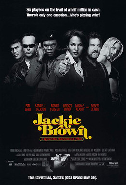

Quentin Tarantino
1997
154 minutes
Here we have one of Quentin Tarantino's weirdly overlooked films, which you're going to give a re-watch. You're not sure why this one gets so overlooked. It's certainly violent enough at points and there's plenty of swearwords to keep twelve year old boys of all ages and genders giggling. Samuel L. Jackson is even in it. Maybe the aging protagonists who aren't complete violent psychopaths has something to do with it. Maybe it's the slightly bittersweet and world-weary tone. Maybe it's "too black". In any case, this isn't the one people memorize lines of to quote and act out for Halloween or for wedding photos.
If you're coming here from Section 158 (Bob the Flambeur) then congratulations for looking ahead. Admire the long tracking shots for the opening credits. They are beautiful. You'll be pondering the credits in that section if you haven't done so already, so there's not much more to say about them here that wasn't already said there.
Pam Grier is pretty incredible in this film. She's 48 here and she's still a very attractive lady. Enjoy her in this, since you won't be watching Coffy or Foxy Brown in these pages. And before you ask--no, she wasn't in Cleopatra Jones, that was Baltimore's own Tamara Dobson, who also graduated from MICA. Cleopatra Jones is the one where Shelley Winters is the antagonist, and Huggy Bear from Starsky and Hutch plays a character named Doodlebug.
This is based on an Elmore Leonard novel, which for better or worse at least guides Tarantino away from some of his worst instincts. You have never read a full Elmore Leonard novel, but it might not be a bad idea to load one up sometime if you ever regain enough of your attention span to sit down and read a book sometime. After watching this film, you will end up reading a chapter or two of Rum Punch and conclude it's pretty amusing and probably worth at least a beach read or whatever the equivalent is for pasty non-beach folks like yourself who don't tan well.
Time to choose something different: